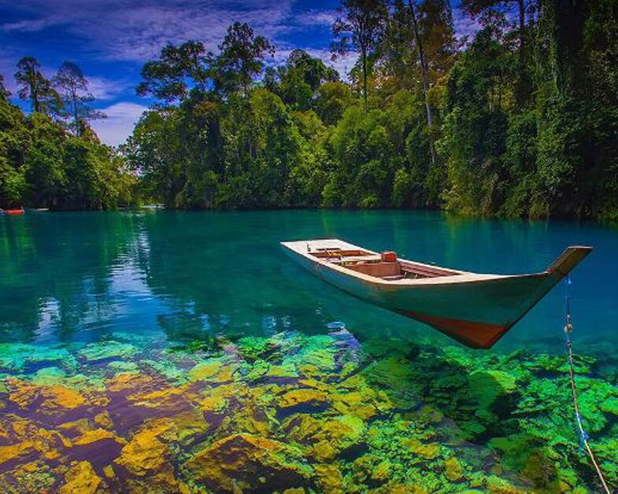

Kepulauan Derawan adalah sebuah kepulauan yang berada di Kabupaten Berau, Kalimantan
Timur. Di kepulauan ini terdapat sejumlah objek wisata bahari menawan, salah satunya
Taman Bawah Laut yang diminati wisatawan mancanegara terutama para penyelam kelas
dunia. Di Kepulauan Derawan terdapat beberapa ekosistem pesisir dan pulau kecil yang
sangat penting yaitu terumbu karang, padang lamun dan hutan bakau (hutan mangrove).
Selain itu banyak spesies yang dilindungi berada di Kepulauan Derawan seperti penyu
hijau, penyu sisik, paus, lumba-lumba, kima, ketam kelapa, duyung, ikan barakuda dan
beberapa spesies lainnya.
Pasar Terampung Lok Baintan
Banjar, Kalimantan Selatan
Pasar di Banjarmasin ini berbeda dari kebanyakan pasar. Penjual dan pembeli sama-sama
berada di atas perahu. Namanya Pasar Lok Baintan, pasar terapung. Pasar terapung Lok
Baintan berada di Sungai Martapura. Tidak ada bangunan di pasar ini. Pasar ini
terjadi karena berkumpulnya para pedagang di tempat ini. Mereka menggunakan jukung,
sejenis perahu kecil yang digerakkan menggunakan dayung. Para pedagang itu
berkumpul, berbaur dengan pembeli. Pasar ini selalu ada setiap pagi saat hari cerah.
Kegiatan jual beli mulai sejak Matahari belum terbit, saat hari masih gelap.
Kegiatan di pasar ini mulai berkurang pada sekitar pukul 8 pagi. Saat siang, pasar
terapung ini sudah tak terlihat.

Labuan Cermin
Berau, Kalimantan Timur
Labuan Cermin adalah objek wisata air yang berada di Kabupaten Berau, Kalimantan
Timur tepatnya ada di Desa Labuan Kelambu, Biduk-biduk. Destinasi wisata ini
dikelola langsung oleh masyarakat setempat yang telah bekerja sama dengan lembaga
yang ada sekitar daerah di Labuan Cermin. Wisata ini belakangan menjadi perbincangan
banyak orang. Tidak heran memang mengingat
keindahan yang ditawarkan tempat wisata satu ini. Danau Labuan Cermin terletak di
hutan belantara daerah Kalimantan. Meskipun untuk sampai kesana diperlukan sedikit
pengorbanan, namun keindahannya akan mengobati rasa lelah para wisatawan. Tidak
hanya wisatawan lokal, bahkan nama danau ini sampai ke para wisatawan asing
Bukit Kelam
Sintang, Kalimantan Barat
Bukit kelam merupakan batu monolit gelap yang tingginya sekitar 1.002 meter di atas
permukaan laut. Kawasan bukit yang membentang sekitar dua hingga tiga meter dari
barat ke timur di Desa Kebong. Batu monolit ini diperkirakan menjadi batuan monolit
terbesar dan tertinggi di Kalimantan Barat. Kawasan wisata ini juga merupakan
rekomendasi untuk para pendaki, karena memiliki dinding batu yang sesuai untuk
mendaki. Jenis batu Bukit Kelam dikenal sebagai climber Internasional. Bagi
wisatawan yang tidak dapat mendaki bukit tidak perlu khawatir. Bukit Kelam memiliki
udara yang segar dengan pemandangan hutan tropis di sekitarnya.
Bukit Rimpi
Tanah Laut, Kalimantan Selatan
Bukit Rimpi terletak di Pelaihari, Kabupaten Tanah Laut, Kalimantan Selatan. Kawasan
Bukit Rimpi memiliki panorama yang memukau berupa padang savana yang hijau. Tempat
wisata Bukit Rimpi juga dikenal sebagai Bukit Teletubies karena hamparan bukitnya
seperti yang terdapat di film Teletubbies. Bukit Rimpi memiliki keindahan yang akan
membuat pengunjung terkagum-kagum. Bukit berupa padang hijau dengan hamparan rumput
tersebut memiliki gunungan layaknya bukit yang terdapat di New Zealand. Panorama
bukit sangat asri dan terkadang ada gerombolan hewan ternak yang sedang mencari
makan. Perpaduan bukit hijau dan hewan ternak menambah keindahan bukit. Bukit Rimpi
juga memiliki akses spot terbaik untuk melihat matahari terbit.
Pantai Melawi
Balikpapan, Kalimantan Timur
Pantai Melawai merupakan tempat wisata yang terletak di Desa Prapatan, Kecamatan
Balikpapan Kota, Kota Balikpapan, Kalimantan Timur. Pantai Melawai sedikit berbeda
dari pantai pada umumnya. Hal ini karena, pantai tidak memiliki bibir pantai yang
luas serta hamparan pasir yang panjang. Bibir Pantai Melawai dibatasi dengan batuan
karang dan tembok yang terbuat dari beton. Walaupun begitu, pemandangan di
sekitarnya tetap menyuguhkan pesona alam yang indah. Dulunya, Pantai Melawai
merupakan tempat pengeboran minyak pertama di Indonesia. Pantai ini sebenarnya juga
merupakan teluk, namun seiring berjalannya waktu menjadi daya tarik untuk wisatawan.